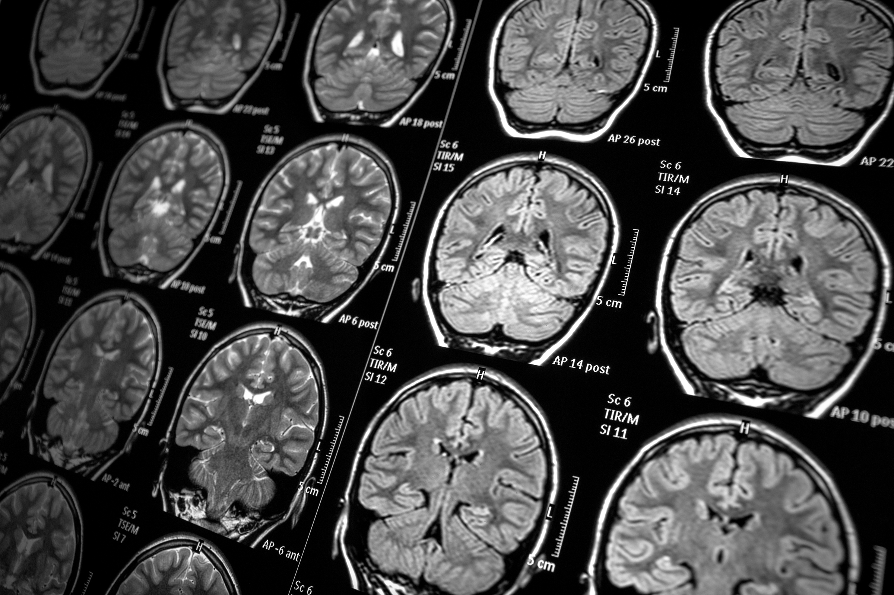
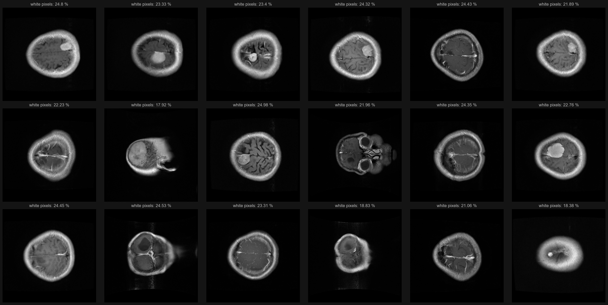
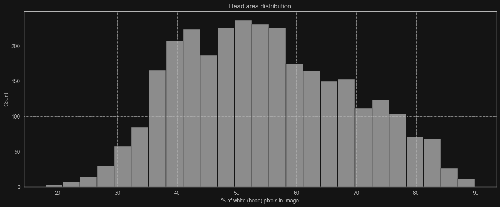
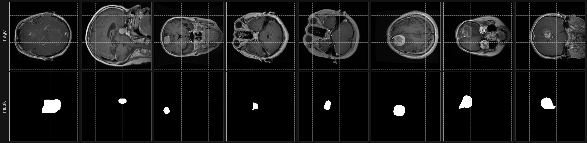
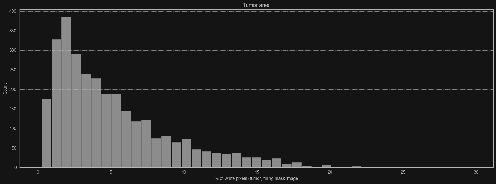

Brain tumors
In this project I analyzed 'Brain tumor dataset', a T1 weighted image dataset from figshare.
The project is in jupyter notebook format (.ipynb) that shows the process of data analysis and building models.
Libraries I've used:
- tensorflow, keras, sklearn for machine learning
- numpy, scipy, random for numerical operations
- matplotlib, seaborn for plotting
- os, cv2 for loading images
The full process includes:
- Data exploration
- Image extraction
- Preview images
- Black/White balance
- Skull size
- Class weights
- Feature scaling
- Splitting Data
- 1st Model (tumor type)
- Building a model
- Testing the model
- Visualising results
- Predicting tumor location
- Mask extraction
- Preview the masks
- Tumor size
- Feature scaling
- Splitting Data
- 2nd Model (tumor location)
- Conclusion
Example features I extracted
Head size
I calculated amount of white pixels inside image.
In summary this plot returns images where head fills specified % of area in image.


Tumor size
Similarly to head size I also calculated amount of white pixels inside,
but this time I used tumor border coordinates to create binary mask and then counted the white pixels in it.


Summary
What I achieved:
- AI model that predicts tumor type with accuracy of roughly 95%
- AI model that predicts tumor location based on predicted binary mask
Significant improvement noticed after::
- Weighting classes
- Adding dropout layers to avoid overfitting
Future ideas:
- Filter out certain head size
- Border box around predicted tumor localization
- Finish full web/desktop application
I think this is a good starting point to create some kind of application for brain MRI scans.
It'd predict tumor type and it's location.